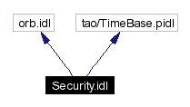
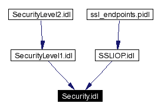

Main Page Namespace List Class Hierarchy Alphabetical List Compound List File List Namespace Members Compound Members File Members
Security.idl File Reference
#include <orb.idl>
#include <tao/TimeBase.pidl>
Include dependency graph for Security.idl:

This graph shows which files directly or indirectly include this file:

Generated on Thu Jan 16 00:20:42 2003 for TAO_SSLIOP by
 1.2.13.1 written by Dimitri van Heesch,
© 1997-2001
1.2.13.1 written by Dimitri van Heesch,
© 1997-2001